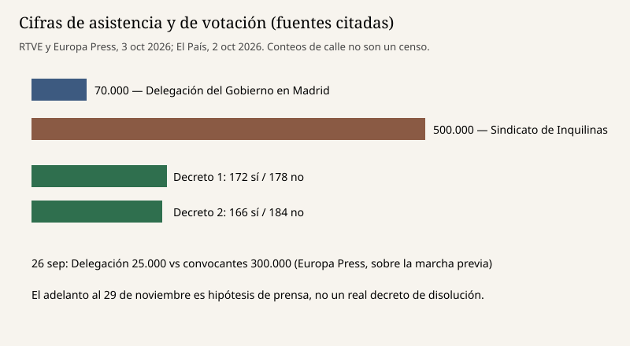

Madrid · vivienda · 3 octubre 2026
La Delegación del Gobierno cifró en 70.000 la marcha de Madrid; los convocantes, en 500.000

Lo que coinciden las crónicas
El sábado 3 de octubre de 2026 hubo manifestaciones por la vivienda en varias ciudades de España, convocadas por el Sindicato de Inquilinas bajo el lema «Hacia la huelga general», un día después de que el Congreso rechazara dos reales decretos-ley. En Madrid, las crónicas de RTVE y de Europa Press describen cuatro columnas —norte, sur, este y oeste— que salieron alrededor de las 12:00 y confluyeron en Cibeles poco antes de las 14:00. Europa Press dice que la marcha transcurrió sin incidentes.
Las dos cifras de asistencia que circulan no son la misma medición. La Delegación del Gobierno en Madrid habló de unas 70.000 personas. El Sindicato de Inquilinas habló de medio millón. RTVE recoge ambos números en el cuerpo de la noticia y, en un título actualizado, la fórmula «cientos de miles». Esa fórmula está más cerca del cómputo de los convocantes que del de la Delegación. No es un censo. Ninguna de las piezas puntuadas aquí publica el método: fotografía aérea, aforo policial o estimación de organización.
El voto del viernes es independiente del aforo del sábado y sí tiene cifra de acta. El País da 172 síes y 178 noes al primer decreto, y 166 síes y 184 noes al segundo. En el segundo se sumaron al no el PNV y Coalición Canaria, que habían apoyado el primero. La presidenta del Congreso, Francina Armengol, declaró derogado el primero tras el recuento, en la crónica de Diario de Avisos. Un real decreto-ley no convalidado decae. No hace falta otra ley para derogarlo.
Lo que es solo una declaración
Pedro Sánchez dijo en el hemiciclo, antes de la votación, que la historia juzgaría a quienes tumbaron los decretos «antes de lo que creen y con más contundencia de la que imaginan». Es un discurso. No es un decreto de disolución. El País escribe que el presidente evalúa sondeos y que fuentes de Moncloa mantienen abiertos todos los escenarios, incluida una disolución cuya primera fecha disponible sería el domingo 29 de noviembre. «Disponible» es calendario electoral, no una firma. Yolanda Díaz, en piezas del viernes, no cerró la puerta a un adelanto. El PP ha dicho que buscará la forma de forzar elecciones si fracasan unos presupuestos prorrogados. Ninguna de esas frases convoca las Cortes.
Valeria Racu, portavoz del Sindicato de Inquilinas de Madrid, dijo que la huelga general será «pronto» y que «gobierne quien gobierne» no aceptarán otros cuatro años sin abordar la vivienda. Es un aviso de organización. Europa Press recuerda que el 26 de septiembre la Delegación cifró otra marcha en 25.000 personas y los convocantes en 300.000. La brecha de ayer repite la brecha de septiembre. No la resuelve.
El mecanismo que hace falta para leer el día
Un real decreto-ley es una norma del Gobierno para casos de extraordinaria y urgente necesidad. Entra en vigor al publicarse y debe ser convalidado por el Congreso en treinta días. Si la convalidación falla, la norma deja de existir desde ese rechazo. Los dos textos de esta semana, el 26/2026 y el 27/2026, de 29 de septiembre, buscaban, según El País, prorrogar un escudo antidesahucio para hogares vulnerables hasta 2030, limitar subidas de renta, tocar el alquiler de temporada y de habitaciones, y reforzar la prórroga de contratos de vivienda habitual. Junts anunció el jueves que votaría en contra. PP, Vox y UPN también votaron no. Sin esos votos, la mayoría que sostuvo la investidura no alcanzaba.
La manifestación no sustituye ese acta. Puede cambiar el cálculo político del lunes, que es lo que describen las crónicas de Moncloa: mirar sondeos y mirar la calle antes de decidir si se disuelve. Un presidente puede disolver las Cortes salvo en los supuestos de la Constitución, entre ellos el primer año tras una disolución anterior y ciertos estados excepcionales. Si disuelve, la campaña y la fecha las fija la ley electoral a partir del decreto, no un titular. Hasta que ese decreto exista, el 29 de noviembre es una hipótesis de redacción.
Tampoco conviene fundir el caso de Maricarmen Abascal con el aforo de Cibeles. El desahucio de septiembre es el antecedente que el Gobierno usó para justificar la urgencia. La marcha del sábado es una respuesta a la caída de esas normas y a la política de vivienda en general. Mezclarlas en una sola cifra —de asistentes, de desahucios o de votos— es un error de unidad.
Lo que esta pieza no es
No es una predicción de elecciones. No es una validación del medio millón ni de los 70.000. No es una fotografía de la marcha: la imagen es el palacio de Cibeles en un día distinto, elegida por ser reutilizable y poco teatral. No afirma que los decretos siguieran vigentes el sábado.
